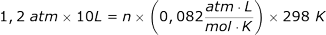
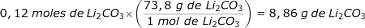
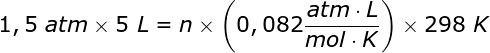
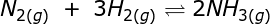
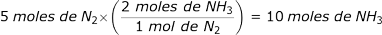

Las partículas en los sólidos se encuentran con poca libertad de movimiento, debido a la gran fuerza de atracción que hay entre ellas, que solo les permite presentar movimiento de vibración u oscilación.
-
01
Los sólidos
Open or CloseLas moléculas del agua en estado sólido se encuentran organizadas, comparadas con su estado en los líquidos y en los gases.
Profundiza
01.1Las propiedades de los sólidos
Las propiedades de los sólidos están determinadas por el tipo de fuerzas que mantienen unidas a las partículas que los conforman, lo cual les garantiza:
- El ordenamiento de sus partículas.
- Mantener la forma y el volumen constante.
- Ser incompresibles, pues, por más intensas que sean las fuerzas que se apliquen sobre ellos, prácticamente no varían su volumen.
- No difundirse entre sí.
- Poseer dureza debido a su estructura compacta (por ejemplo todas las piedras preciosas son de alta dureza).
- La resistencia a fracturarse o a deteriorarse, propiedad conocida como tenacidad.
Los puentes colgantes están construidos enteramente de acero (aleación de hierro y carbono) debido a la alta tenacidad de este material sólido. Un ejemplo es el Golden Gate, a la entrada de la bahía de San Francisco (California, Estados Unidos).
- Poseer conductividad eléctrica, específicamente en los sólidos que presentan enlaces metálicos.
- Poseer conductividad térmica, lo cual aumenta el movimiento de las partículas del sólido.
- Tener elasticidad, es decir, recuperar la forma después de haber sido deformados, esto se evidencia en materiales como las bandas elásticas.
- Tener flexibilidad, capacidad de deformarse constantemente sin romperse.
El caucho es un material muy elástico.
01.2Las clases de sólidos
Los sólidos se clasifican de acuerdo con su estructura de cristalización (ordenamiento de átomos, moléculas o iones) en cristalinos y en amorfos.
Los sólidos cristalinos presentan las partículas ordenadas en posiciones específicas, que se repiten periódicamente en tres dimensiones, por ello, con un trozo del sólido conoceremos la estructura completa del material. Cuando los sólidos cristalinos se fracturan, lo hacen tendiendo a conservar su estructura.
El azúcar, la sal y el hielo son ejemplos de sólidos cristalinos.
Los sólidos amorfos carecen de un ordenamiento tridimensional definido y repetido, pues su formación es muy rápida y sus partículas no tienen tiempo de alinearse.
El vidrio, uno de los materiales más usados en la vida cotidiana, es considerado un sólido amorfo, del cual se pudo establecer, con técnicas de difracción de rayos X, que carece de un ordenamiento periódico regular.
Otra clasificación de los sólidos
Según el tipo de enlace que presenten, los sólidos se clasifican en metálicos y no metálicos. Los primeros presentan enlaces metálicos y los segundos, enlaces covalentes o iónicos.
01.3Los sistemas cristalinos
Los cristales son sólidos que presentan formas geométricas definidas, debido al orden estricto y regular en que se ubican las unidades que los conforman. En la formación de un cristal es importante la manera como se acomodan las celdas unitarias en la red cristalina.
La celda unitaria es la unidad básica y estructural repetida en un sólido cristalino. Se representa con un poliedro que se ubica en una red cristalina hasta completar la estructura. En cada intersección se ubica un punto, llamado punto reticular, que representa la ubicación de las partículas en el cristal.
Existen siete posibilidades de acomodación de las celdas unitarias en las estructuras de los sólidos cristalinos, las cuales se conocen como sistemas cristalinos.
En los sistemas cristalinos, el ángulo ? está definido por las aristas b y c, el ángulo ? por las aristas a y c, y el ángulo ? por las aristas a y b.
01.4Los tipos de cristales
Existen cuatro tipos de cristales: iónicos, covalentes, moleculares y metálicos.
- Los cristales iónicos están formados por cationes y aniones, que pueden diferir o no en tamaño, por ejemplo, el cristal del cloruro de sodio (sal de cocina) es iónico, pues presenta los iones Na+ y Cl- unidos por interacciones electrostáticas. Los cristales iónicos no son buenos conductores, pero si se les eleva su temperatura aumenta su conductividad eléctrica.
Recuerda
Los cationes están cargados positivamente y los aniones presentan carga negativa.
- Los cristales covalentes tienen los átomos unidos a través de enlaces de tipo covalente, por ende, no son conductores eléctricos ni térmicos, pues no presentan electrones libres que transfieran la energía de un punto a otro.
Los enlaces covalentes en el diamante contribuyen a su dureza particular.
- Los cristales moleculares presentan en el punto reticular moléculas unidas por las fuerzas de Van der Waals o por puentes de hidrógeno, estas fuerzas de atracción son más débiles que en los cristales iónicos o en los covalentes, lo que los hace ser más quebradizos y deformables, además que no conducen electricidad ni calor. Por ejemplo, el dióxido de azufre (SO2) es un cristal molecular en el que predomina la fuerza de atracción dipolo-dipolo.
- Los cristales metálicos tienen en cada punto reticular un átomo del mismo metal, lo que los hace más densos. Debido a que presentan los electrones del enlace metálico deslocalizados en toda la estructura, son buenos conductores térmicos y eléctricos.
Profundiza
Practica
01.5Consolidación
Actividades para consolidar lo que has aprendido en esta sección.
Practica
-
02
Los gases
Open or CloseLa atmósfera está compuesta por gran cantidad de gases, como el oxígeno, el cual permite llevar a cabo procesos vitales para el ser humano, los animales y las plantas. Reconocer las propiedades y el comportamiento de los gases es relevante para tomar posición sobre aspectos relacionados con el ambiente y la salud.
02.1Las propiedades de los gases
Los gases tienen propiedades diferentes a las de los otros estados de la materia, pues en ellos las partículas están muy separadas, y las fuerzas de atracción son tan débiles que pueden moverse libremente. Los gases no tienen forma ni volumen definidos, pues adoptan el volumen del recipiente donde se almacenen. Además, pueden difundirse fácilmente gracias a que sus partículas son muy pequeñas y su densidad es baja. Se consideran los más compresibles de los estados de agregación.

El gas que contiene en su interior el globo aerostático adopta la forma del globo y, al tener menor densidad que el aire, se presenta un empuje hacia arriba.
En los gases la energía cinética es alta, lo que hace que la presión ejercida por las partículas sea apreciable debido a los choques constantes que se efectúan, que aumentan al subir la temperatura. Esto también les permite expandirse a gran velocidad.
02.2La teoría cinética-molecular de los gases
La teoría cinética-molecular es un modelo que relaciona magnitudes termodinámicas con propiedades microscópicas de los gases.
Magnitudes termodinámicas
Las magnitudes termodinámicas que se relacionan al describir un sistema son: la presión (atm, mm de Hg, Torr, Pascal), el volumen (L), la masa (g o moles) y la temperatura (K).
Este modelo explica el comportamiento y características de los gases, considerando que:
- Los gases están formados por pequeñas partículas en movimiento continuo, aleatorio y de trayectoria recta, que chocan entre sí y con las paredes del recipiente que las contiene, lo que genera presión.
- Las fuerzas de atracción son muy débiles, por ello las partículas se encuentran separadas.
- El volumen que ocupan las moléculas de un gas es pequeño, si se lo compara con el volumen que ocupa el gas en su totalidad, pues la mayor parte es vacío.
- La energía cinética de las moléculas del gas aumenta al aumentar la temperatura.
- Al aumentar la cantidad de un gas en un sistema aumenta la presión, pues se incrementan los choques de las partículas contra las paredes del recipiente que lo contienen.
La teoría cinética-molecular permite explicar por qué las moléculas de gases azufrados como el sulfuro de hidrógeno (H2S), producto de la descomposición bacteriana del azufre en las aguas termales se movilizan rápidamente en varias direcciones, comportamiento que permite que se perciba, el olor a huevo podrido.
02.3Consolidación
Actividades para consolidar lo que has aprendido en esta sección.
Practica
-
03
Las leyes de los gases
Open or CloseLas leyes de los gases son producto de siglos de trabajo experimental con gases en diferentes condiciones de presión, temperatura y volumen. Dentro de ellas, se conocen la ley de Boyle-Mariotte, la ley de Charles, la ley combinada de los gases, la ley de Avogadro, la ley de Gay-Lussac y la ley de Dalton.
Profundiza
03.1La ley de Boyle-Mariotte
En el siglo XVII, el científico Robert Boyle analizó la relación entre la presión (P) y el volumen (V) de un gas en un sistema cerrado, cuando la temperatura (T) se mantiene constante.
Boyle evidenció que a temperatura constante, al aumentar la presión, el volumen disminuye, lo cual permite decir que la presión y el volumen son inversamente proporcionales.
La ley de Boyle se expresa matemáticamente:
Donde ? representa la proporcionalidad. Si se cambia el volumen o la presión en una muestra de gas sin que haya cambio en la temperatura ni en la cantidad de gas, los nuevos datos darán el mismo producto que los iniciales, por ello se puede igualar PV inicial y PV final, así:
Por ejemplo, ¿cuál es la presión final de 80 L gas helio, si inicialmente se tenía una muestra de 30 L a 4, 5 atm de presión? La temperatura y la cantidad de sustancia permanecen constantes.
- Organizamos los datos del ejercicio:
P1 = 4,5 atm
P2 = ?
V1 = 30 L
V2 = 80 L - Reemplazamos los datos en la ecuación que representa
la ley de Boyle-Mariotte:
- Despejamos la incógnita, que en este caso es P2, y
realizamos las operaciones matemáticas:
De esta manera tenemos que la presión final que experimenta el gas es de 1,69 atmósferas.
¿Por qué se llama ley de Boyle-Mariotte?
La ley lleva los apellidos de estos dos científicos. Aunque Robeth Boyle publicó sus trabajos en 1662, Edme Mariotte llegó a la misma conclusión sobre los gases, pero él lo publicó hasta 1676.
03.2La ley de Charles
La ley de Jack Charles establece que la relación entre la temperatura y el volumen, cuando la presión y la masa son constantes, es directamente proporcional, es decir, que al aumentar la temperatura el volumen también lo hace.
Comportamiento de la ley de Charles.
Para las condiciones iniciales y finales, se puede escribir la ecuación:
Si reescribimos la ecuación, obtenemos:
Unidad de temperatura
En el trabajo de las leyes de los gases la unidad de temperatura que se utiliza es el Kelvin (K).
Por ejemplo, si en un recipiente hay 0,5 L de aire a una temperatura de 274 K, ¿cuál será el volumen que ocupa el aire cuando la temperatura aumenta a 310 K?
- Organizamos los datos del ejercicio:
T1 = 274 K
T2 = 310 K
V1 = 0,5 L
V2 = ? - Reemplazamos los datos en la ecuación que representa
la ley de Charles, puesto que en la situación descrita la presión
y la cantidad de gas permanecen constantes:
- Despejamos la incógnita, que en este caso es V2, y
realizamos las operaciones matemáticas correspondientes:

El volumen que ocupa el aire a 310 K es 0,57 litros.
03.3La ley de Gay-Lussac
Si se analiza un sistema en donde el volumen y la cantidad de gas permanecen constantes, se obtiene la relación de la presión y la temperatura, conocida como la ley de Gay-Lussac.
Al aumentar la temperatura, también la presión lo hace, es decir son directamente proporcionales.
La relación entre presión y temperatura se expresa matemáticamente así:
Si la reescribimos, obtenemos:
Por ejemplo, si un aerosol tiene una presión de 2 atm a una temperatura de 298 K, ¿cuál será la presión, si se aumenta la temperatura a 573 K?
- Organizamos los datos del ejercicio:
T1 = 298 K
T2 = 573 K
P1 = 2 atm
P2 = ? - Reemplazamos los datos en la ecuación que representa
la ley de Gay-Lussac:
- Despejamos la incógnita, que en este caso es P2, y
realizamos las operaciones matemáticas correspondientes:
Al aumentar la temperatura del aerosol, este experimenta una presión de 3,85 atm.
03.4La ley combinada de los gases
Al combinar las ecuaciones de las tres leyes (de Boyle-Mariotte, de Charles y de Gay-Lussac), donde la cantidad de gas permanece constante, se obtiene la ley combinada de los gases, que enuncia que para una cierta cantidad de gas el producto de la presión por el volumen, dividido por la temperatura, es un valor constante, lo cual se expresa así:
Al ser una proporcionalidad constante, se puede expresar como:
Por ejemplo, si un globo se llena con 1,5 L de helio a una temperatura de 298 K y una presión de 0,8 atm, ¿cuál es la presión del gas en el globo cuando la temperatura es de 238 K y el volumen es de 3,4 L?
- Organizamos los datos del ejercicio:
T1 = 298 K
T2 = 238 K
V1 = 1,5 L
V2 = 3,4 L
P1 = 0,8 atm
P2 = ? - Reemplazamos los datos en la ecuación que representa
la ley combinada de los gases:
- Despejamos la incógnita, que en este caso es P2, y
realizamos las operaciones matemáticas correspondientes:
La presión final es de 0,28 atmósferas.
Recuerda
En las leyes de los gases propuestas por Boyle-Mariotte, Charles y Gay-Lussac siempre permanece constante la cantidad de gas.
03.5La ley de Avogadro
La ley de Avogadro analiza el comportamiento de los gases cuando hay cambio en la cantidad de masa (moles), estableciendo que el volumen de un gas es directamente proporcional al número de moles, cuando se mantienen constantes la presión y la temperatura, lo cual se enuncia matemáticamente así:
En donde n representa la cantidad del gas en moles.
Por ejemplo, si un recipiente cerrado con capacidad de 2 L se llena con 2 moles de un gas, ¿cuál será el nuevo volumen, si se adicionan 3 moles más para un total de 5 moles del gas?
- Organizamos los datos del ejercicio:
n1 = 2 moles
n2 = 5 moles
V1 = 2 L
V2 = ? - Reemplazamos los datos en la ecuación que representa
la ley de Avogadro:
- Despejamos la incógnita, que en este caso es V2, y
realizamos las operaciones matemáticas correspondientes:
El gas se expande a un volumen de 5 L.
03.5.1El volumen molar
A partir de la ley de Avogadro se puede decir que dos gases que contengan el mismo número de moles, en condiciones estándar (TPE) de temperatura (273 K) y presión (1 atm), ocupan el mismo volumen. Así, un mol de cualquier gas a TPE ocupa un volumen de 22,4 litros. Este valor se conoce como volumen molar.
Un mol de cualquier gas a TPE tienen un volumen molar de 22,4 L.
03.6La ley de Dalton
La ley de las presiones parciales o ley de Dalton establece que la presión total de una mezcla de gases se obtiene sumando las presiones individuales de los gases que conforman la mezcla.

Por ejemplo, ¿cuál es la presión total de una mezcla que contiene: nitrógeno (N2) a una presión de 3 atm, dióxido de carbono (CO2) a 5 atm e hidrógeno (H2) a 1 atm?
- Sumamos las presiones de los gases que conforman la
mezcla:
La presión total de la mezcla de gases es de 9 atmósferas.
Practica
03.7Consolidación
Actividades para consolidar lo que has aprendido en esta sección.
- Organizamos los datos del ejercicio:
-
04
La ley de los gases ideales
Open or CloseUn gas ideal es un gas hipotético a unas condiciones dadas en el que las moléculas no se atraen ni repelen mutuamente. Si se relacionan las cuatro propiedades termodinámicas (P, T, V y n), se obtiene una expresión matemática llamada ley de los gases ideales.
Donde la presión se da en atmósferas (atm), el volumen en litros (L), la cantidad de gas en moles (n), la temperatura en Kelvin (K) y la constante R equivale a:
Gas real
Un gas se considera real cuando presenta interacciones entre sus partículas, situación que se manifiesta a presiones elevadas y bajas temperaturas, un gas real no sigue la ecuación de estado de los gases ideales.
Por ejemplo, ¿cuántos moles de gas cloro (Cl2) hay en un tanque de 10 L, si el gas tiene una presión de 1,2 atm a una temperatura de 25 °C (298 K)?
- Organizamos los datos del ejercicio:
P = 1,2 atm
V = 10 L
n = ?
R = 0,082 atm·L/mol·K
T = 298 K - Reemplazamos los datos en la ecuación de los gases
ideales:
- Despejamos la incógnita, que en este caso es n, y realizamos los respectivos cálculos:
En el tanque se encuentran 0,49 moles de cloro (Cl2).
Profundiza
04.1Relación entre masa molar y densidad de un gas
A partir de la ecuación de estado se puede conocer la densidad de un gas y, con esta, saber la masa molar del mismo.
Recuerda
La masa molar corresponde a la masa de un mol de sustancia y se determina sumando las masas molares de los átomos que la componen.
Para calcular la densidad se reescribe la ecuación de los gases ideales, así:
Donde P es la presión, M es la masa molar, R la constante de los gases, que equivale a 0,082 atm·L/mol·K, y T es la temperatura.
Por ejemplo, ¿cuál es la densidad de un gas amarillo verdoso que contiene cloro y oxígeno, sabiendo que su masa molar es de 67,9 g/mol a 309 K y 3 atm?
- Organizamos los datos del ejercicio:
P = 3 atm
M = 67,9 g/mol
T = 309 K
R = 0,082 atm·L/mol·K - Reemplazamos los datos en la ecuación y hacemos los
cálculos respectivos:
La densidad del compuesto es de 8,04 g/L. Si lo que se quiere determinar es la masa molar, es pertinente reemplazar en la ecuación el valor de la densidad.
04.2Consolidación
Actividades para consolidar lo que has aprendido en esta sección.
- Organizamos los datos del ejercicio:
-
05
La estequiometría de gases
Open or CloseEn los gases se usa la estequiometría para dar cuenta de las relaciones entre cantidades de masa y volumen. Para realizar estos cálculos es necesario aplicar las leyes de los gases.
Recuerda
La estequiometría permite calcular las cantidades de sustancias que reaccionan o se producen, a partir de unos datos iniciales y de los expresados en la ecuación química que representa la reacción.
Profundiza
05.1Cálculos en masa
Cuando se requiere determinar la relación en gramos, se usa la ley de los gases ideales: PV = nRT.
Por ejemplo, ¿cuántos gramos de carbonato de litio (Li2CO3) se forman cuando reaccionan 3 L de CO2 con LiOH, a 1 atm de presión y 312 K de temperatura?
- Escribimos la ecuación balanceada que representa la
reacción:
- Calculamos el número de moles de CO2 consumido en la reacción, para esto utilizamos la ecuación de los
gases ideales:
- Despejamos la incógnita, que en este caso es n, y realizamos los cálculos respectivos:
- Analizamos la ecuación química, cuando reacciona 1 mol de CO2, se produce 1 mol de Li2CO3, así que cuando reaccionen 0,12 moles de CO2 se producirán 0,12 moles de Li2CO3.
- Determinamos mediante un factor de conversión, la masa
de Li2CO3 producido,
sabiendo que la masa molar es de 73,8 g/mol:
Cuando reaccionan 3 L de CO2 a 1 atm y 312 K se producen 8,86 g de Li2CO3.
05.2Cálculos en moles
Para realizar cálculos en moles es necesario aplicar la ecuación de los gases ideales PV = nRT.
Por ejemplo, en la reacción entre el zinc (Zn) y el ácido clorhídrico (HCl) se produce cloruro de zinc (ZnCl2) e hidrógeno (H2), ¿cuántos moles de Zn se requieren para producir 5 L de H2 a 298 K y 1,5 atm?
- Escribimos la ecuación balanceada que representa la
reacción:
- Calculamos el número de moles de H2 que hay en 5 L del gas a 298 K y 1,5 atm, para esto utilizamos la
ecuación de los gases ideales:
- Despejamos la incógnita, que en este caso es n, y realizamos los cálculos respectivos:
- Analizamos la ecuación química, para producir 1 mol de H2, se requiere 1 mol de Zn. Cuando se producen 0,31 moles de H2 han reaccionado 0,31 moles de Zn.
05.3Cálculos en volumen
Los cálculos en volumen se pueden realizar usando el volumen molar o la ley de los gases ideales.
Recuerda
El volumen molar de un mol de sustancia en estado gaseoso, en condiciones estándar de temperatura y presión (273 K y 1 atm), equivale a 22,4 litros.
Por ejemplo, ¿cuál es el volumen de gas amoniaco obtenido en condiciones normales de temperatura y presión, cuando reaccionan 5 moles de nitrógeno con la cantidad suficiente de hidrógeno?
- Escribimos la ecuación balanceada que representa la
reacción:
- Usamos el factor de conversión para calcular el número
de moles de amoniaco obtenidos:
- Calculamos el volumen de amoníaco obtenido utilizando
el volumen molar:
Cuando reaccionan 5 moles de N2 en condiciones normales, se obtienen 224 L de NH3.
05.4Consolidación
Actividades para consolidar lo que has aprendido en esta sección.
- Escribimos la ecuación balanceada que representa la
reacción:
-
06
La ley de Graham y los gases reales
Open or CloseThomas Graham estudió la difusión de los gases, es decir, la capacidad de dispersión que tienen las moléculas de un gas, que es conocida hoy como ley de Graham. Teniendo en cuenta los aportes del químico británico, actualmente se sabe que muchos de los gases se desvían del comportamiento ideal, es decir, se comportan como gases reales.
Recuerda
En los gases ideales las partículas se mueven aleatoriamente, sin atraerse ni repelerse mutuamente.
06.1La ley de la difusión de Graham
Los gases se difunden de acuerdo con sus propiedades cinéticas, es decir, según el movimiento continuo y al azar de las moléculas que los conforman. La difusión siempre procede desde la región de mayor concentración y va a la de menor concentración. Este proceso lleva tiempo en completarse, pese a las altas velocidades de desplazamiento. Por ello se dice que la difusión es un proceso gradual donde el gas más ligero o menos denso se difunde a través de cierto espacio más rápidamente que un gas pesado o más denso.
Después de varias determinaciones, Graham estableció que la velocidad de un gas es inversamente proporcional a la raíz cuadrada de su densidad o masa molar, aseveración conocida como ley de difusión de Graham. Matemáticamente esta se expresa mediante las siguientes ecuaciones, donde v es velocidad, d densidad y M masa molar.

Las moléculas de un insecticida en aerosol experimentan numerosas colisiones al difundirse en el aire. La difusión se da desde la salida del recipiente hacia el aire.
06.2Los gases reales
Los gases reales no pueden ser descritos con las leyes de los gases ideales, pues experimentan cambios de fase o estado e interacciones de atracción y repulsión que son significativas y, por tanto, no se pueden despreciar, como supone el comportamiento ideal. A presiones elevadas aumenta la densidad de los gases, pues las partículas se encuentran muy cerca, lo cual afecta el movimiento, y si disminuye la temperatura, la energía cinética también lo hace, lo que impide que las moléculas rompan la atracción mutua.
Para estudiar los gases reales es necesario tener en cuenta las fuerzas intermoleculares y los volúmenes moleculares y con ello modificar la ecuación del gas ideal. La ecuación que relaciona P, T, V y n para un gas real se denomina ecuación de Van der Waals:
En la ecuación los valores de a y b son específicos para cada gas: a representa la atracción de las moléculas del gas y b la correlación del tamaño molecular.
06.3Consolidación
Actividades para consolidar lo que has aprendido en esta sección.
-
07
Competencias
Open or ClosePon a prueba tus capacidades y aplica lo aprendido con estos recursos.
-
Fin de unidad:
Open or Close
repaso